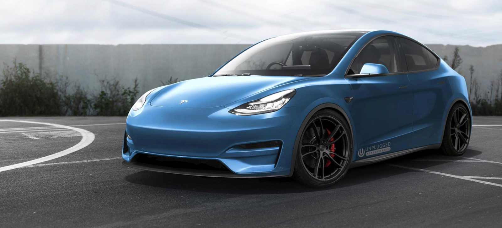

Elon Musk might say some crazy stuff, but he's right about at least one thing: his electric vehicles have changed the world. When the Model S launched in 2012, it was the first long-range, widely desired electric vehicle, and mainstream automakers have been struggling to catch up ever since. The Model S is still impressive—it now has an EPA-estimated 370 miles of range in its Long Range variant—but for all its focus on autonomous technology, over-the-air updates, and Easter eggs, Tesla's interiors and build quality can sometimes fall short of expectations. Better-established luxury automakers are finally getting in on the EV game—Porsche's Taycan is aimed directly at the Model S, for example—and Tesla will need all its Silicon Valley pivot-power to stay ahead of the pack.
----------------------------------------------------------------------------------------------------------------------------------------------------------------------------------------------------------
Yesterday we reported that the (now discontinued) Mid-Range Model 3 has seen a performance bump from 5.6s to 4.9s since its debut. Many of you naturally asked about the other trims, so here you go! We break down all the trims as they were advertised at their debut, how they’re currently advertised on Tesla’s website as of today, November 17, and what drivers are reporting with the 2019.36.x software update which began deployment on November 8, 2019. Note that 2019.36.x was the second power boost for all Model 3s, there was an earlier over-the-air power boost in March 2019.
 ----------------------------------------------------------------------------------------------------------------------------------------------------------------------------------------------------------
----------------------------------------------------------------------------------------------------------------------------------------------------------------------------------------------------------
it’s a remarkable vehicle. The Model X is loaded with features that made Cars.com reviewer Joe Bruzek wonder why other manufacturers haven’t done the same thing or similar. The Model X also impressed with its range, charging abilities and acceleration – and it wasn’t even the P100D model complete with Ludicrous mode.
 --------------------------------------------------------------------------------------------------------------------------------------------------------------------------------------------------------
--------------------------------------------------------------------------------------------------------------------------------------------------------------------------------------------------------
I’m a big fan of the Tesla Model Y. I’ve written about the Model Y’s 3rd row being the key to it becoming the best selling vehicle in the world, the Model Y beating the Lamborghini Urus (which is over 3 times the price), styling tricks that Tesla used to make an SUV looks like a performance sedan, and most recently Tesla cutting Model Y prices..
 --------------------------------------------------------------------------------------------------------------------------------------------------------------------------------------------------------The hype surrounding Tesla's second-generation Roadster is palpable, but the fact is that most of us mortals will never be able to afford one since it's likely to cost somewhere north of $200,000. But Tesla isn't staffed by a bunch of dummies, they know that if they offer a lower-cost version, people will come in droves. That's why the automaker's come out with this totally sweet $250 1:18 scale die-cast version. .
 --------------------------------------------------------------------------------------------------------------------------------------------------------------------------------------------------------
--------------------------------------------------------------------------------------------------------------------------------------------------------------------------------------------------------
The Tesla Cybertruck is unlike anything you’ve seen before: sharp creases and angles, like something doodled by a (talented) high schooler in that boring history class, or imagined for a science fiction movie. It is also a competitively priced pickup, listed at $40,000 to $70,000 with one to three motors. Speaking of science fiction, CEO Elon Musk said delivery will be in 2021, which is as little 58 weeks away, as much as 109 weeks away. Tesla has a history of missing ship dates, and not by a small margin. The design is so far outside the pickup truck norm, with an angled bed cover, stainless steel body, and shatterproof windows (which of course shattered during the announcement), that there is considerable belief the design will change significantly between now and the, uh, 2021 launch date. So Cybertruck may be a working name
 -----------------------------------------------------------------------------------------------------------------------------------------------------------------------------------------------------------
-----------------------------------------------------------------------------------------------------------------------------------------------------------------------------------------------------------